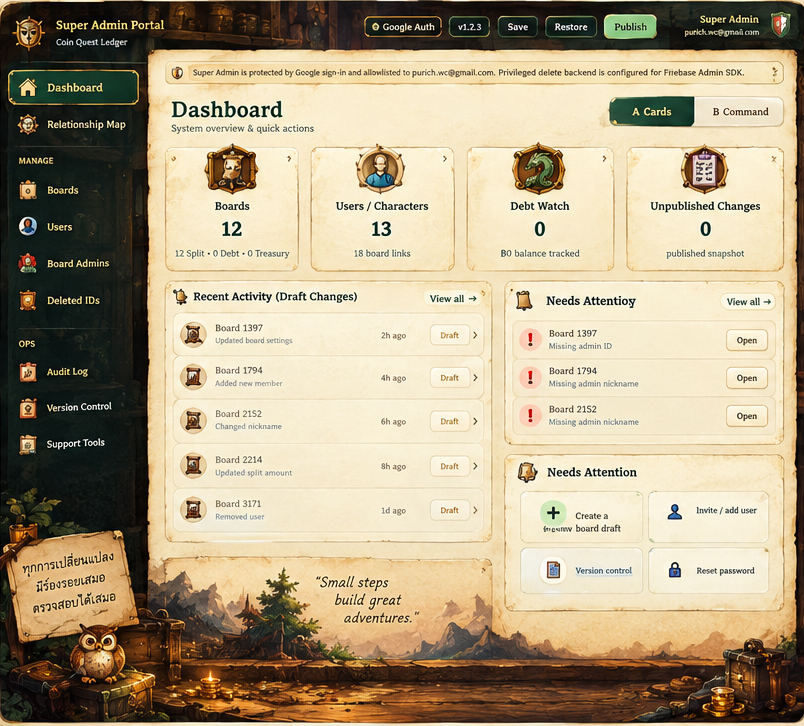
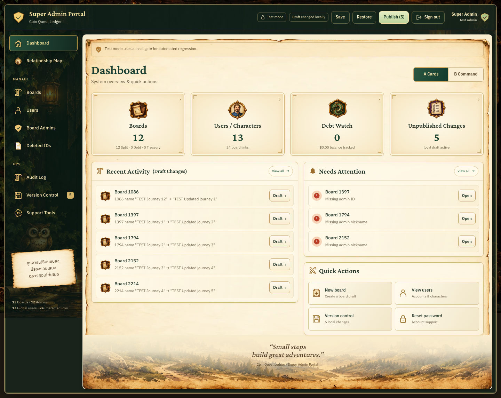
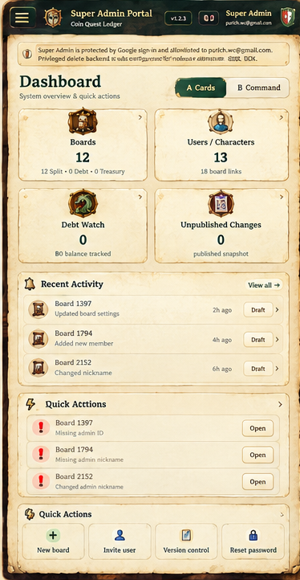
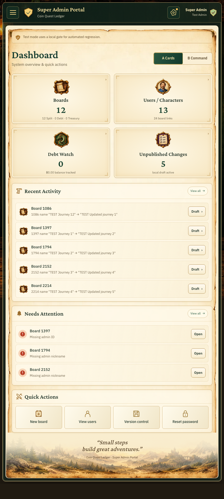
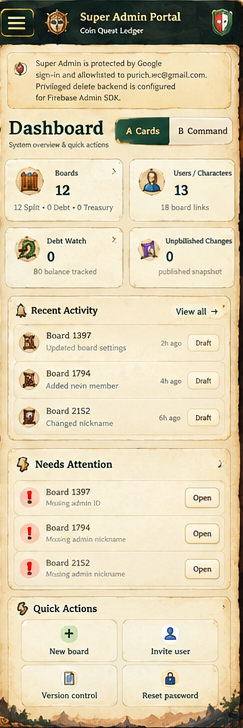
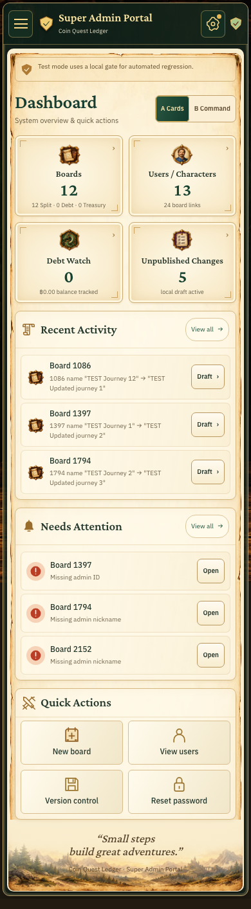

Local Chromium renders with isolated TEST data, 2026-10-14. The left images crop the supplied annotated mockup to the app frame; the right images show the complete implementation at the stated CSS viewport width. Reference and app records differ; scale is normalized to each comparison column.





